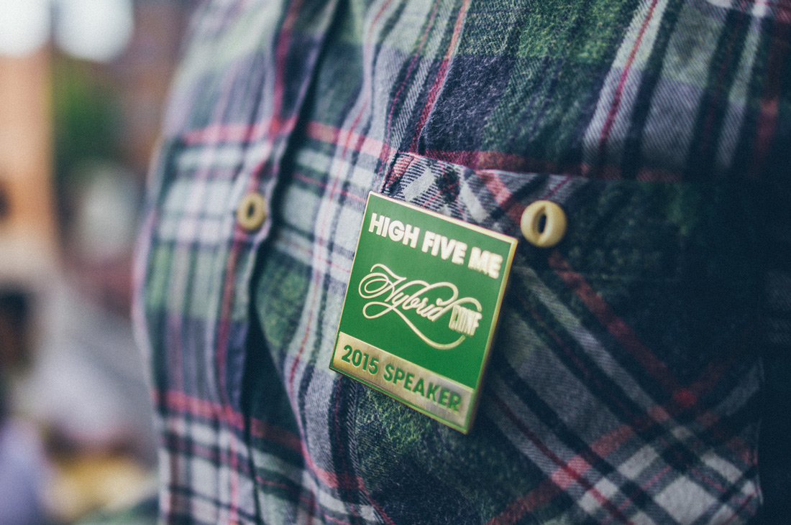
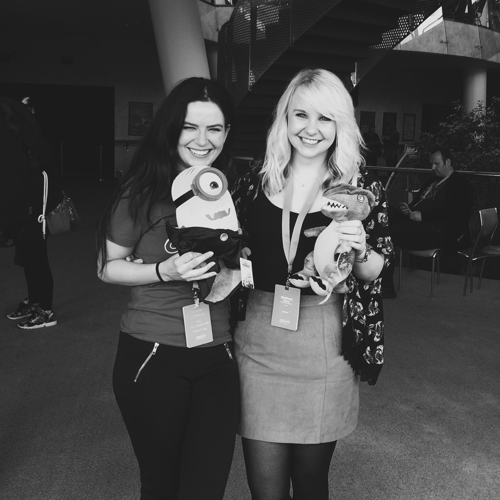

Hybrid Conf, you were amazing
Posted on Aug 30, 2015
Posted on Aug 30, 2015
Last week I had the pleasure of attending Hybrid, a conference for both web designers and developers alike. After reading so many great things about the conference in previous years, I was delighted to be there representing Eyekiller, and getting the opportunity to listen to a variety of inspiring talks, given by speakers from all over the globe. On the Wednesday evening before the conference kicked off, Sinead and I began our roadtrip to Dublin.
While there was something I could take away from every talk given inside the auditorium at Dublin City University, there were a few that really stood out to me.
In his talk “Going Deeper,” Chris Murphy described how we should cast our net wide and broaden our knowledge in a range of topics, and explore those which interest us most, allowing us to find the connections and become better creatives. I really like the idea of becoming the “T-shaped Person” that he described, and I think this would lead to more effective collaborating when working with my team at Eyekiller.
 I met so many awesome people at Hybrid
It was difficult not to leave Dublin feeling refreshed and inspired after the two days of talks inside The Helix. Many of the speakers shared their journeys of working on the web, or a product, or even a rap video, and kept the audience captivated, and often, in flood of tears from laughing so much. Meg Lewis’ 5 minute pocket talk has encouraged me to make a positive impact around me using my creative skills while not expecting anything in return, while Scott Riley’s talk proved how lucky we are to be in a community that is so open to sharing knowledge and support.
Zach and Laura did a stellar job of putting Hybrid together, as there wasn’t only a super speaker lineup, but also great treats for attendees and fun events around the conference, including the 90’s themed bowling. Sinead and I may not have been the best bowlers there, but we did win prizes for the best dancing of the evening, ha!
 Sinead and I won prizes for being the best dancers at the Hybrid Bowling night out!
The highlight of the trip for me, was meeting so many of the wonderful people that I’ve admired (and followed daily on Twitter) for so long. The culture of the event was one of inclusion, friendliness and with it being in Dublin, a lot of good craic. I have such a huge appreciation for the hard work Zach and Laura put into organising this amazing event. I hope that I get the chance to cross paths with everyone again soon!
If you’d like to see more of my pictures from the conference, check out my Exposure photo story! :)